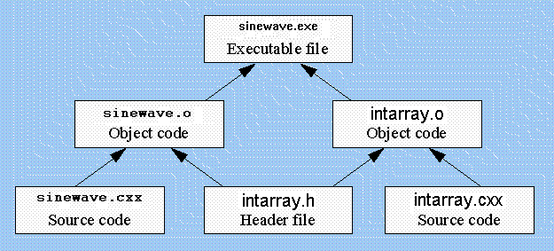

The file makefile is the usual input file for a tool called make. The
purpose of make is to help you maintain and update a collection of related
program files. The collection usually has header files, cxx files, and
compiled files--all of which depend on each other. For example, consider
last week's sinewave program.
The final product is an executable file named
sinewave.exe, which is created by linking together two other compiled files,
sinewave.o and intarray.o. The two compiled files were created by
compiling
sinewave.cxx
and
intarray.cxx
(both of which used the header file
intarray.h).
The complete dependencies among the files can be
drawn like this:

The upward arrows in the file express how each file is created. For
example, the file sinewave.o is created by compiling sinewave.cxx and also
includes intarray.h. To state the matter simply:
If sinewave.cxx or intarray.h changes, then sinewave.o must be regenerated
by giving the compiler command:
g++ -Wall -c -gstabs sinewave.cxx
This requirement
to sometimes regenerate sinewave.o is one of the dependencies
that the example makefile expresses. To see this dependency, use emacs
to open up the file named makefile.
Near the bottom of the file you'll find these two lines:
sinewave.o: sinewave.cxx intarray.h
g++ -Wall -c -gstabs sinewave.cxx
The first line is called a target line, which begins with a file name and
a colon. After the colon is a list of more file names. Here's how to
interpret the line: The file before the colon (called the target file)
depends on the other files (after the colon). Whenever one of the files
after the colon changes, the make tool knows that the target file needs
to be regenerated. After the target line, there is a series of commands
that tell exactly how to regenerate the target file. For the case of
sinewave.o, we only need the one g++ command to regenerate the file.
(Notice that we included the -c flag to indicate that we should only
compile and not create an executable file yet. We also included the
-gstabs flag in case we want to use the debugger.)
There is one
other peculiar requirement: The command lines (such as the g++ command)
must each begin with a tab (not with 8 spaces!).
As a second example of a dependency, the executable file sinewave.exe is
created by compiling together the object files sinewave.o and intarray.o.
If either of these two object files should change, then sinewave.exe also
needs to be recreated. Here is the appropriate target line and command
from our makefile:
sinewave.exe: sinewave.o intarray.o
g++ -Wall -gstabs sinewave.o intarray.o -o sinewave
This target line says that if sinewave.o or intarray.o should happen to
change, then the sinewave.exe must be regenerated with the g++ command that is
shown.